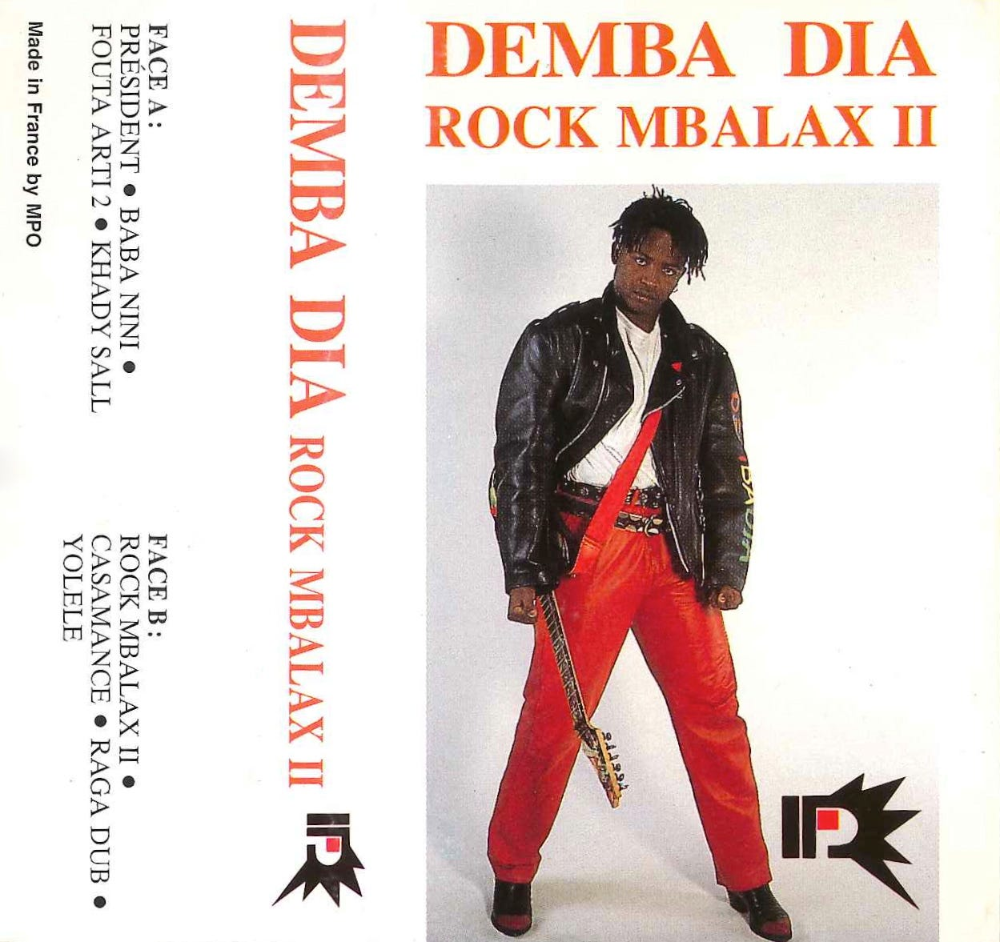
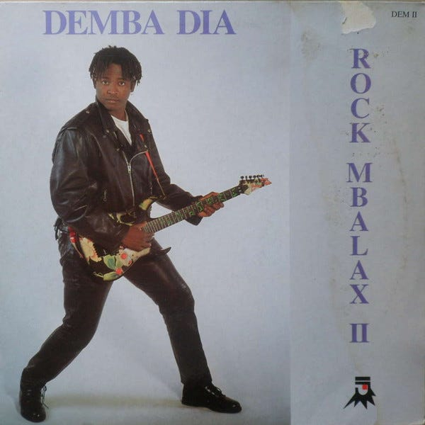

A category-defining artist from my country


When you are an artist if you design the genre you are playing with, you are already the leader of this genre then you can focus on what is most important, chipping your art, playing it for joy not for pleasing everybody because it is sure that there will be many who will not like the genre you have defined. That’s what this artist below has done mixing a local genre of music (Mbalax) with an international one(Rock).

Demba passed away years ago, but today I thought about his art and I thought at the same time that writing about this artistic challenge he tried successfully is like honouring his bravery and art. By doing this I am honouring all artists at the same time because I see the art community like a chain, each artist of a given field putting the state of the art to the next level for the coming artist to put it even further.
When you start something new, when you are different don't be surprised to be seen as foolish or be misunderstood but keep teaching to those you seek to serve what this genre is for and what it is about and soon or later you will have this minimum viable audience that will support you live with your art.
I used to think that engineering has nothing to do with Art but when I first Crossed the way of these two french word ART & METIERS, I understood that engineering is all about art that seeks to build utilities that ease the playing fields of other artistic fields.
Here is my favourite title
here the title of the coming data-driven book that will be published by Book Dojo a mail-only startup that publish data-driven books, builds and operates Book-driven platforms for book communities and book lovers.
The playing field will change for sure because Book Dojo is making a ruckus.
PS: REST IN PEACE. Praying for you Demba and for all artists who left us not alone but with their pieces of art for us to remember.